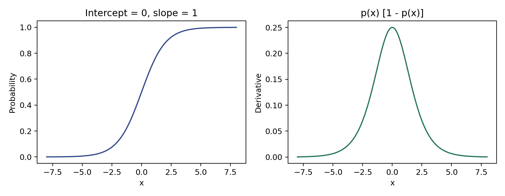

代码 4.3.1-01 · 观察概率曲线与局部变化率
按完整Notebook顺序运行。本章使用教学数组与给定舍入系数，尚不包含4.4；本块可能依赖前面变量。
逐步读代码
本块可直接作为Notebook起点。np是NumPy，plt是绘图模块，Path管理文件路径。image_dir指向当前工作目录下的“图片”；mkdir(exist_ok=True)创建目录，已存在时不因重复创建而报错。
linspace(-8, 8, 201)包含两端点，均匀生成201个输入；np.exp逐元素计算指数。这里截距0、斜率1，所以导数为p_curve * (1-p_curve)。数组乘法*是逐元素乘法。
subplots(1, 2)创建一行两张子图；axes[0]和axes[1]分别指向它们。plot绘制曲线；set一次设置横轴、纵轴和标题。十六进制颜色只是外观设置，不必背诵。
tight_layout调整间距；savefig把图保存到图片目录，dpi控制位图分辨率；close释放图对象。f字符串中的:.2f表示保留两位小数。此图仅呈现已推导公式，不是根据客户数据拟合的结果。
实际运行输出
p(0) = 0.50, derivative at 0 = 0.25
